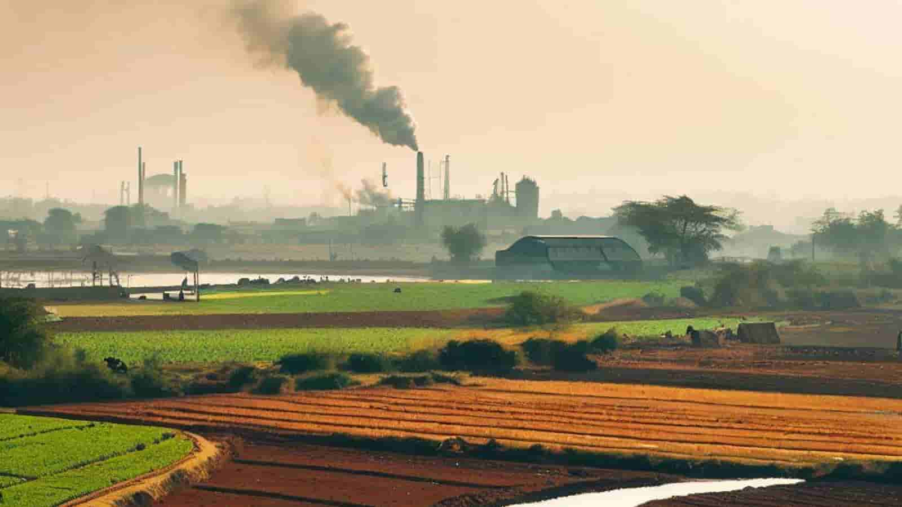

India's Great Efforts in Tackling The Climate Change

In the scorching heat of the Indian subcontinent, where the sun beats down relentlessly, an invisible threat looms large - climate change. As the mercury rises, so does the urgency to combat the environmental challenges that India faces. From tackling desertification to planting trees and innovating eco-friendly solutions, the country is forging ahead on a path towards sustainable living.
Table of Contents
- Desertification
- Desertification Solutions
- India's Eco-Friendly Innovations
- Green Technologies Transforming India
- India's Single-Use Plastic Ban
- India's War Against Single-Use Plastics
- How Many Trees Has India Planted?
- India's Tree Plantation Endeavors
- India's Green Stories from Eco India
- Eco India's Comprehensive Approach
- FAQs About India's Climate Change Initiatives
- Conclusion
Desertification
India, with its diverse geography, is not immune to the problems of desertification. The expanding arid regions pose a significant threat to agricultural lands and biodiversity. But in recent decades, India has been on a mission to combat this ever-expanding threat.
Desertification Solutions:
- Afforestation Initiatives: The government has launched extensive afforestation programs, aiming to convert barren lands into lush green zones. Planting a diverse range of native trees helps prevent soil erosion and revitalizes the ecosystem. India has also tested out different planting methods, and the most widely and popular method is called the Miaka planting method.
- Water Management: Sustainable water management practices, such as rainwater harvesting and watershed development, play a crucial role. By optimizing water usage, India aims to rejuvenate parched lands and combat desertification.
- Community Participation: Local communities are actively involved in combating desertification. Through awareness campaigns and grassroots initiatives, the people are becoming guardians of their environment, planting trees and preserving their natural resources.
India's Eco-Friendly Innovations
In the quest for a greener future, India is making remarkable strides in eco-friendly innovations. These innovations span across various sectors, from technology to agriculture, reflecting the nation's commitment to sustainable development.
Green Technologies Transforming India:
- Solar Power Revolution: India is harnessing the abundant sunlight it receives to generate clean energy. The widespread adoption of solar power not only reduces carbon emissions but also makes energy accessible to remote areas.
- Electric Vehicles (EVs): With an eye on curbing vehicular pollution, India is promoting the use of electric vehicles. The government provides incentives to both manufacturers and consumers, encouraging the adoption of eco-friendly transportation alternatives. Unfortunately, there are many poor communities in India, so there are very few people who actually have access to an Electric car. Instead, many people would rather invest in the cheapest and good quality alternative to an EV vehicle, which is a battery-powered scooter or motorcycle. It is starting to grow more in the EV scooter and motorcycle market, and there are even some workshops in India who offer to turn a diesel-powered motorcycle into an electric vehicle.
- Waste-to-Energy Solutions: Converting waste into energy is a groundbreaking innovation in waste management. Biogas plants and waste-to-energy facilities are cropping up across the country, addressing the dual issues of waste disposal and energy scarcity. Biogas units are also starting to pop up in more rural areas in India, where mostly small-scale farmers need this energy the most. By rural areas adapting more to biogas energy, less women have to go to the nearby forest and cut down trees, to let it be burned so they can cook their food. Biogas units can replace this heavy labor and also protect local wildlife and biodiversity.
India's Single-Use Plastic Ban
The plastic problem is a global concern, and India has taken bold steps to combat the pollution caused by single-use plastics. The government's ban on certain plastic items and the promotion of eco-friendly alternatives are contributing to a cleaner and greener India.
India's War Against Single-Use Plastics:
- Ban on Single-Use Plastics: India has imposed a ban on various single-use plastic items, including bags, cutlery, and straws. This regulatory measure is aimed at reducing plastic pollution and promoting sustainable practices.
- Awareness Campaigns: To garner public support, extensive awareness campaigns have been launched, educating citizens about the environmental impact of single-use plastics. The "say no to plastic" movement is gaining momentum across the nation.
- Innovation in Packaging: Industries are shifting towards eco-friendly packaging solutions, exploring alternatives like biodegradable materials and plant-based plastics. This shift not only reduces environmental harm but also fosters innovation in the packaging sector.

Image: Biodegradable plates made from pineapple waste
How Many Trees Has India Planted?
India's commitment to combating climate change extends to its ambitious tree plantation campaigns. The country has set impressive targets, aiming to increase green cover and mitigate the adverse effects of deforestation.
India's Tree Plantation Endeavors:
- 8 Billion Trees Initiative: India has embraced the global movement to plant 8 billion trees, contributing significantly to the fight against deforestation and climate change. This massive afforestation drive involves active participation from citizens, organizations, and the government.
- Record-Breaking Plantation Drives: India has set Guinness World Records for the most trees planted in a single day. These large-scale plantation drives involve millions of volunteers, showcasing the nation's dedication to creating a sustainable future.
- Urban Greening Initiatives: Recognizing the importance of green spaces in urban areas, India is focusing on tree planting in cities. Rooftop gardens, tree-lined streets, and urban parks are becoming integral parts of sustainable urban planning.

India's Green Stories from Eco India
The Eco India YouTube channel, a collaborative venture between DW (Deutsche Welle) and Scroll.in, is dedicated to addressing environmental issues and promoting sustainable practices in India. Through a diverse range of videos, the channel highlights stories and initiatives that tackle environmental challenges. Featured content includes profiles of individuals like Kalavati Devi, a mason building toilets for underprivileged families, showcasing efforts in sanitation. The playlist covers topics such as the transition to solar energy at the city level, promoting sustainable urban development. Other videos explore the significance of native plant species for biodiversity and ecological balance, the impact of choosing hyper-local produce on sustainability, and the benefits of decentralized renewable energy sources for a sustainable future. Reflecting on its journey, the channel presents a compilation of favorite moments, serving as an informative platform that showcases innovative solutions and inspiring stories contributing to India's environmental sustainability.
Eco India's Comprehensive Approach:
- Green Technologies: Eco India promotes the adoption of green technologies and innovations, fostering a culture of sustainable living. From energy-efficient appliances to eco-friendly transportation, the initiative encourages individuals and businesses to make environmentally conscious choices.
- Environmental Education: Recognizing the power of knowledge, Eco India emphasizes environmental education. School programs, workshops, and online resources aim to raise awareness about climate change, biodiversity, and the importance of conservation. Please go and check out other videos from Eco India at scroll.in, YouTube channel. They really care about sharing ideas and stopping climate change to the public, and it would be great if you could manage to support them. Their videos are easy to understand, and can really change your perspective on how you see the world around you.
FAQs About India's Climate Change Initiatives
Q1: How is India addressing climate change?
India is addressing climate change through a multi-faceted approach, including afforestation, green technologies, and policy advocacy. The nation is actively participating in global initiatives and setting ambitious targets for reducing carbon emissions.
Q2: What is the impact of climate change on India?
Climate change in India poses threats such as rising temperatures, changing precipitation patterns, and increased frequency of extreme weather events. These impacts affect agriculture, water resources, and the overall well-being of the population.
Q3: How successful is India's ban on single-use plastics?
India's ban on single-use plastics has shown promising results. The reduction in the use of plastic items and the adoption of eco-friendly alternatives indicate a positive shift in consumer behavior. Ongoing awareness campaigns contribute to the success of this initiative.
Conclusion
As India grapples with the challenges of desertification and climate change, the nation stands resilient, adopting sustainable practices and innovative solutions. From massive tree plantation drives to embracing green technologies, India is paving the way for a greener, more sustainable future.